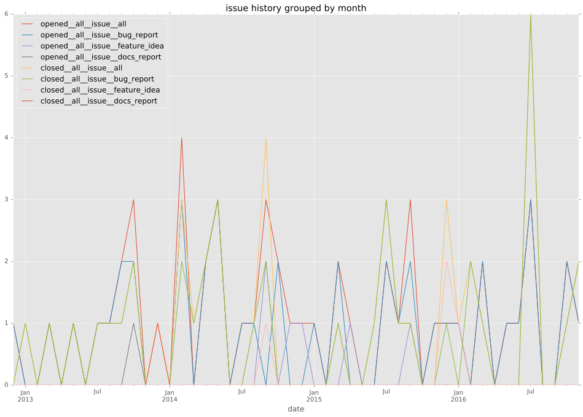
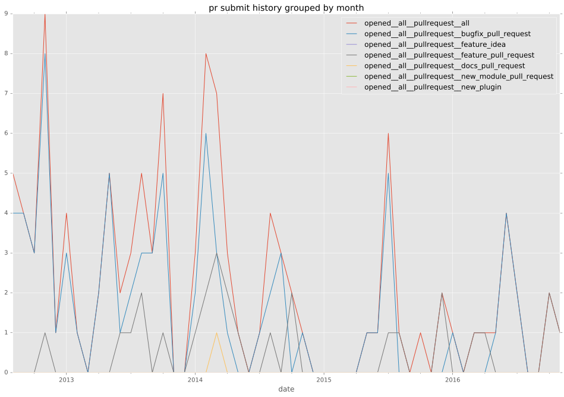
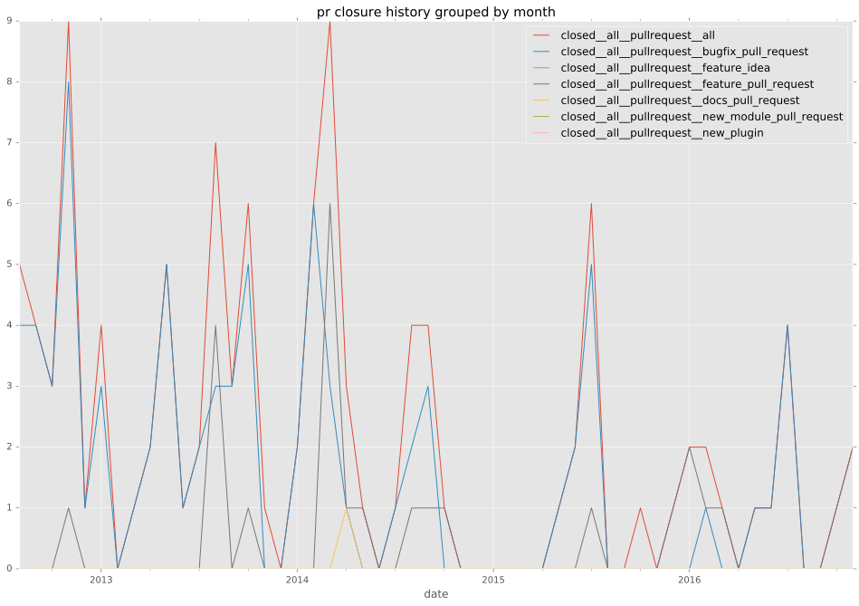

authors
- sashka
maintainers
- ansible
contributors
- mattclay : 16 commits
- jpmens : 4 commits
- resmo : 5 commits
- verm666 : 2 commits
- mpdehaan : 3 commits
- sashka : 49 commits
- towolf : 3 commits
- sfromm : 7 commits
- trevorah : 5 commits
- mavimo : 4 commits
- oxyrox : 1 commits
- jctanner : 7 commits
- Tenzer : 2 commits
- jlaska : 1 commits
- mvo5 : 4 commits
- mscherer : 4 commits
- mattupstate : 13 commits
- amenonsen : 12 commits
- alikins : 4 commits
- AndydeCleyre : 1 commits
- abadger : 3 commits
- sivel : 6 commits
- bcoca : 2 commits
- hosiawak : 3 commits
- timurb : 4 commits
- pilou- : 3 commits
- jimi-c : 6 commits
total issue counts
unknown: 4
bugfix pull request: 84
docs report: 2
pullrequest: 112
docs pull request: 1
feature pull request: 24
feature idea: 6
issue: 48
bug report: 39
issue history

pullrequest history


days open by issue type
feature pull request
count: 31
std: 64.1720972426
min: 0
max: 281
median: 18.0
mean: 40.4838709677
all
count: 205
std: 69.839378129
min: 0
max: 472
median: 1.0
mean: 23.0731707317
pullrequest
count: 0
std: nan
min: nan
max: nan
median: nan
mean: nan
docs pull request
count: 1
std: nan
min: 8
max: 8
median: 8.0
mean: 8.0
docs report
count: 3
std: 27.7128129211
min: 27
max: 75
median: 27.0
mean: 43.0
bugfix pull request
count: 126
std: 27.9257166568
min: 0
max: 220
median: 0.0
mean: 6.13492063492
feature idea
count: 3
std: 239.100397323
min: 23
max: 472
median: 105.0
mean: 200.0
issue
count: 0
std: nan
min: nan
max: nan
median: nan
mean: nan
bug report
count: 36
std: 116.979716055
min: 0
max: 469
median: 5.0
mean: 54.5555555556
closures grouped by total days open